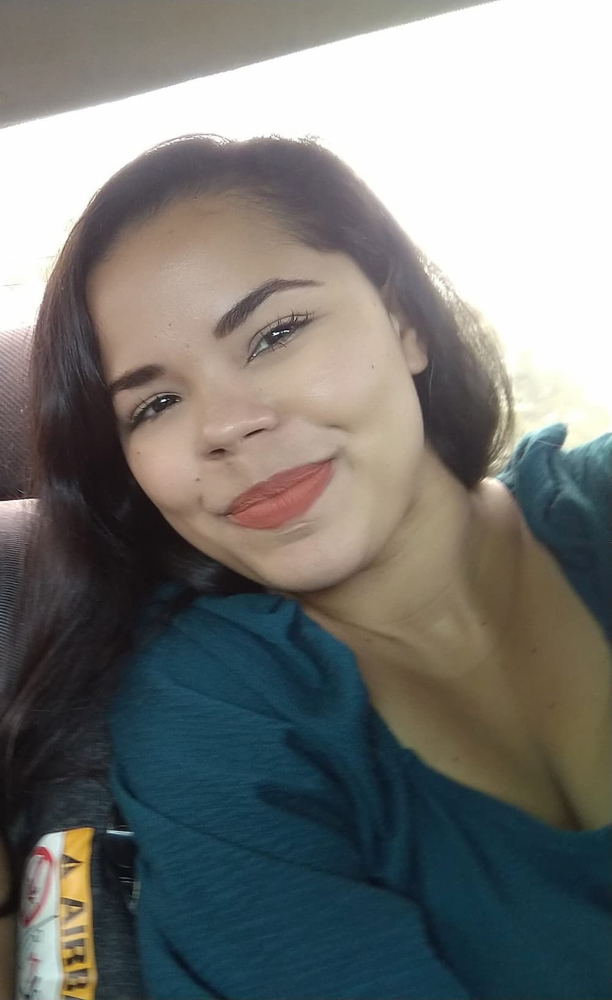

WDD 130 | Jazi Araujo

Sou uma mulher criativa, resiliente e cheia de propósito. Mesmo em meio aos desafios, continuo buscando crescer, aprender e construir algo significativo para minha vida e para minha família. Tenho um olhar muito forte para criatividade, comunicação e conexão com pessoas, algo que aparece no meu interesse por design, social media, tráfego pago e tecnologia. Gosto de transformar ideias simples em algo bonito, marcante e cheio de significado. Também percebo em mim uma vontade constante de aprender coisas novas, organizar projetos e criar algo que realmente faça diferença na vida das pessoas. Acima de tudo, valorizo muito minha família e busco construir relações mais profundas, leves e verdadeiras. Minha fé ocupa um lugar muito importante na minha vida. Faço parte de A Igreja de Jesus Cristo dos Santos dos Últimos Dias, e procuro viver princípios como amor ao próximo, serviço, fé e fortalecimento da família. Tenho um carinho especial por ajudar jovens a desenvolverem atributos cristãos, fortalecerem o testemunho e encontrarem propósito. Além disso, gosto muito de explorar minha criatividade através de hobbies e interesses como natureza, histórias, animais, identidade visual, decoração, projetos “faça você mesmo”, branding e desenvolvimento pessoal. Também sonho em crescer profissionalmente na área da tecnologia e do desenvolvimento web, construindo um futuro que una criatividade, propósito e impacto positivo.